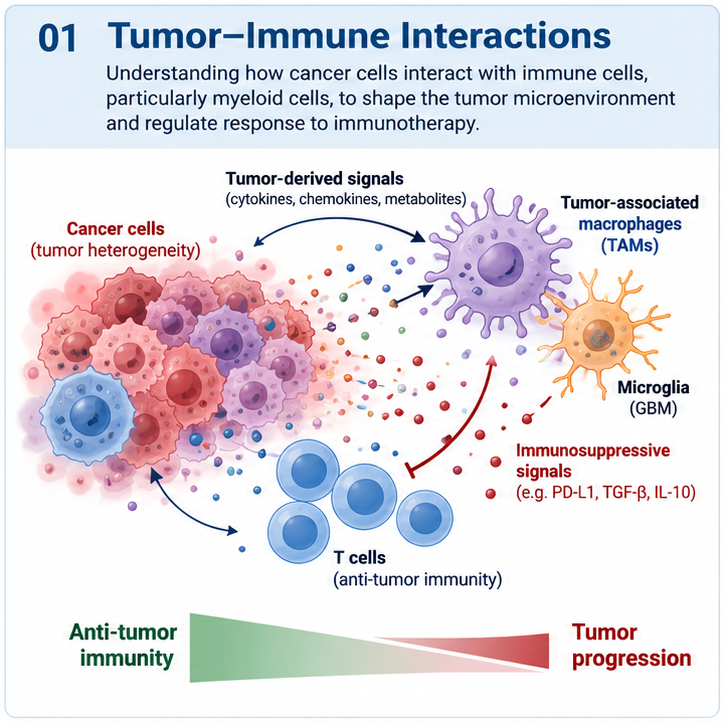

01
Tumor–Immune Interactions
We investigate how cancer cells communicate with immune cells, particularly tumor-associated macrophages and microglia, to shape the tumor microenvironment.
Our goal is to identify tumor-derived signals and tumor-intrinsic pathways that suppress anti-tumor immunity and determine how these interactions can be therapeutically reprogrammed.
